ბიოგრაფია
ევკლიდე იყო ძველი ბერძენი მათემატიკოსი, რომელიც ცხოვრობდა ძვ.წ. III საუკუნეში. იგი მოღვაწეობდა ალექსანდრიაში და ითვლება გეომეტრიის ერთ-ერთ ყველაზე მნიშვნელოვან ფიგურად ისტორიაში.
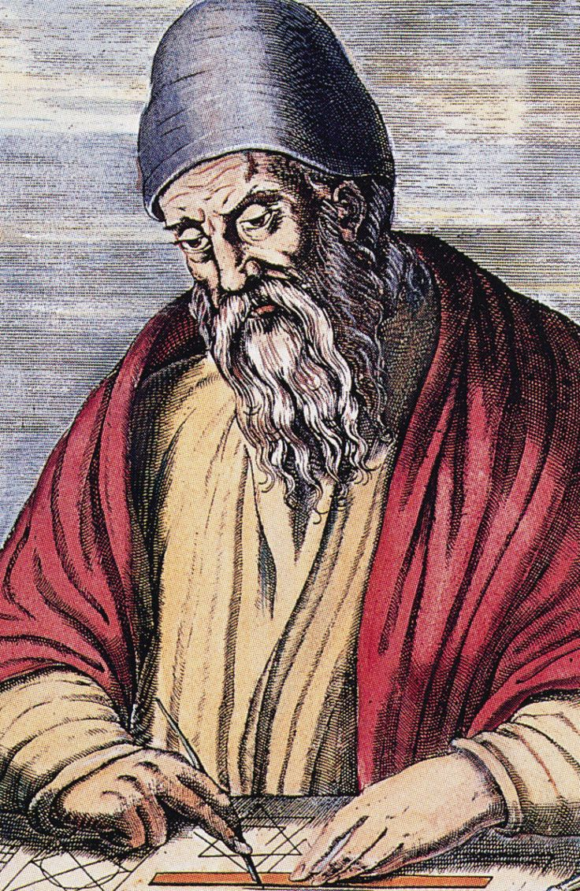
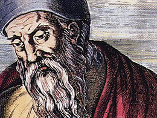
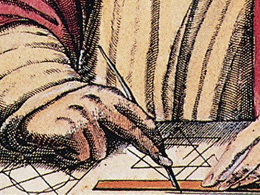
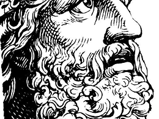
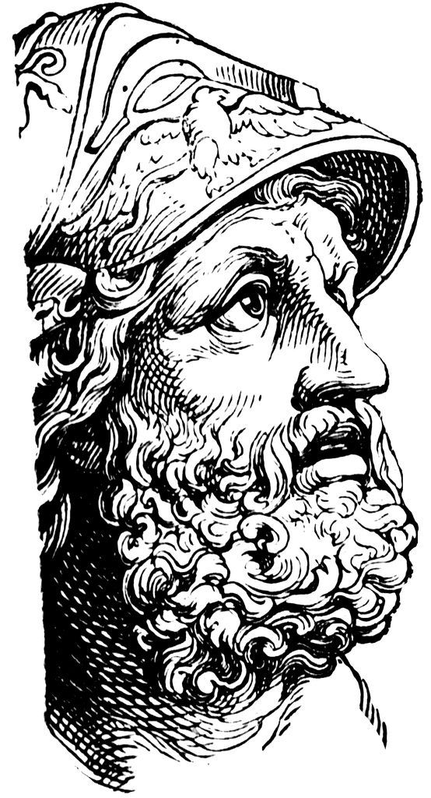
მოღვაწეობა
ევკლიდე ძირითადად მუშაობდა გეომეტრიაში. მისი მთავარი მიზანი იყო მათემატიკური ცოდნის სისტემატიზაცია და ლოგიკურად დალაგება, რაც მან მკაფიო წესებითა და განსაზღვრებებით განახორციელა.
მიღწევები
ევკლიდის ყველაზე ცნობილი ნაშრომია „ელემენტები“, რომელიც საუკუნეების განმავლობაში მათემატიკის ძირითად სახელმძღვანელოდ გამოიყენებოდა. ამ ნაშრომში გეომეტრიული ცოდნა წარმოდგენილია აქსიომებისა და თეორემების სისტემით.
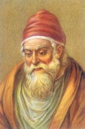
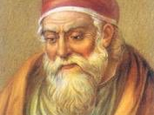
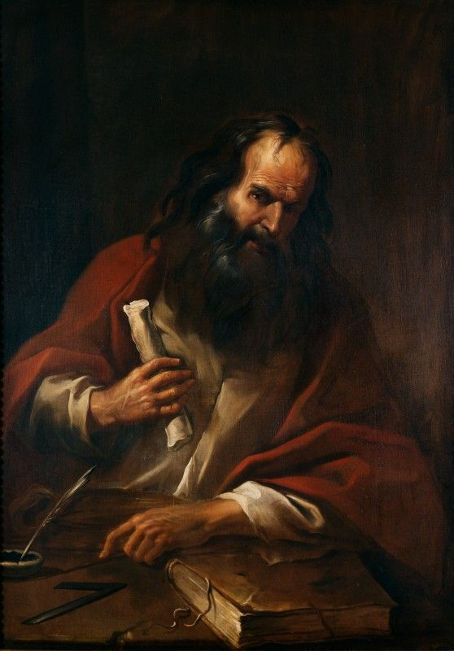
წვლილი
ევკლიდემ ჩამოაყალიბა ევკლიდური გეომეტრიის საფუძვლები. მისი მეთოდი — აქსიომებიდან თეორემებამდე ლოგიკური დასკვნა — დღემდე გამოიყენება მათემატიკაში.
ფაქტები
ლეგენდის მიხედვით, ერთმა მმართველმა ევკლიდეს ჰკითხა, არსებობდა თუ არა გეომეტრიის სწავლების უფრო მარტივი, შემოკლებული გზა, რომელიც ყველასთვის ადვილი იქნებოდა. ევკლიდემ უპასუხა, რომ გეომეტრიაში არ არსებობს გამონაკლისი გზა — არც მეფისთვის, არც უბრალო ადამიანისთვის.
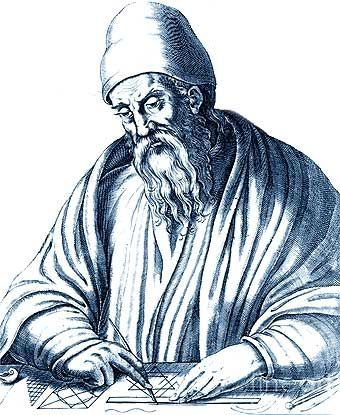
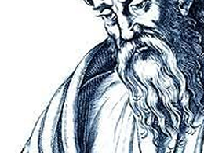
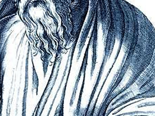